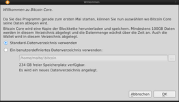
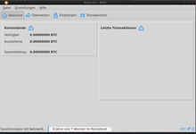
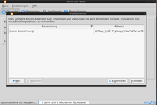

Bitcoin-QT
Dieser Artikel wurde für die folgenden Ubuntu-Versionen getestet:
Ubuntu 16.04 Xenial Xerus
Zum Verständnis dieses Artikels sind folgende Seiten hilfreich:
 Bitcoin ist eine Währung, die nur virtuell existiert, die aber für die Bezahlung von Dienstleistungen und Waren benutzt werden kann. Interessant ist sie, weil sie von keiner Regierung herausgegeben und kontrolliert wird, und weil der Transfer von Bitcoins kaum etwas kostet. Um Bitcoin einsetzen zu können, benötigt man einen Geldbeutel für Bitcoins, ein Wallet. Bitcoin-QT enthält dieses Wallet.
Bitcoin ist eine Währung, die nur virtuell existiert, die aber für die Bezahlung von Dienstleistungen und Waren benutzt werden kann. Interessant ist sie, weil sie von keiner Regierung herausgegeben und kontrolliert wird, und weil der Transfer von Bitcoins kaum etwas kostet. Um Bitcoin einsetzen zu können, benötigt man einen Geldbeutel für Bitcoins, ein Wallet. Bitcoin-QT enthält dieses Wallet.
Installation¶
Da Bitcoin-QT nicht in den offiziellen Paketquellen vorhanden ist, muss es über ein PPA installiert werden.
Adresszeile zum Hinzufügen des PPAs:
ppa:bitcoin/bitcoin
Hinweis!
Zusätzliche Fremdquellen können das System gefährden.
Ein PPA unterstützt nicht zwangsläufig alle Ubuntu-Versionen. Weitere Informationen sind der  PPA-Beschreibung des Eigentümers/Teams bitcoin zu entnehmen.
PPA-Beschreibung des Eigentümers/Teams bitcoin zu entnehmen.
Damit Pakete aus dem PPA genutzt werden können, müssen die Paketquellen neu eingelesen werden.
Danach installieren wir Bitcoin-QT
bitcoin-qt
 mit apturl
mit apturl
Paketliste zum Kopieren:
sudo apt-get install bitcoin-qt
sudo aptitude install bitcoin-qt
Bedienung¶
Allgemeines¶
Bei der Installation wird ein Starter für das Programm in das Startmenü des jeweilgen Window Managers installiert, zusätzlich ist das Starten über die Konsole mit dem Befehl
bitcoin-qt
möglich.
Bei der ersten Nutzung vom Bitcoin-Qt Client, wird nach dem Datenverzeichnis gefragt. Zu beachten bei der Festlegung ist, das nach aktuellem Stand eine Größe von bis zu 25 GB für alle Blockchains benötigt wird, die lokal auf dem Computer des Benutzers zwischengespeichert werden. Bei der ersten Benutzung des Clients kann es (sehr) lange (> 24h) dauern, bist die erste vollständige Sychronisation abgeschlossen ist. Dieser Schritt lässt sich nicht überspringen und muss abgewartet werden, bis ein Versenden von Bitcoins möglich ist.
Nach erfolgreichem Einrichten erscheint das Hauptfenster mit vier Tabs. Beim Start ist die Übersicht ausgewählt, in der man den aktuellen Kontostand und letzten Transaktionen einsehen kann.
Weitere Tabs sind:
Überweisen
Empfangen
Transaktionen
|  |
| Arbeitsverzeichnis |
|  |
| Hauptfenster |
|  |
| Empfangsadressen |
Neue Empfangsadressen¶
Unter "Datei -> Empfangsadressen", können immer wieder und unendlich viele neue Adressen zum Empfangen von Bitcoins generiert werden. Dieser Schritt erhöht die Sicherheit von Bitcointransaktionen sehr deutlich.

- Erstellt mit Inyoka
-
 2004 – 2017 ubuntuusers.de • Einige Rechte vorbehalten
2004 – 2017 ubuntuusers.de • Einige Rechte vorbehalten
Lizenz • Kontakt • Datenschutz • Impressum • Serverstatus -
Serverhousing gespendet von